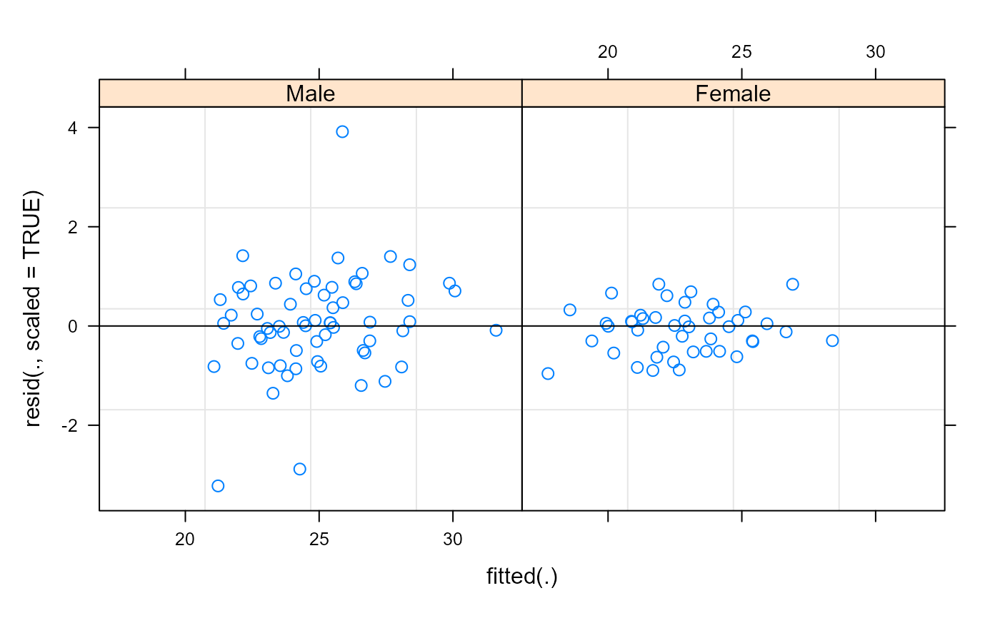
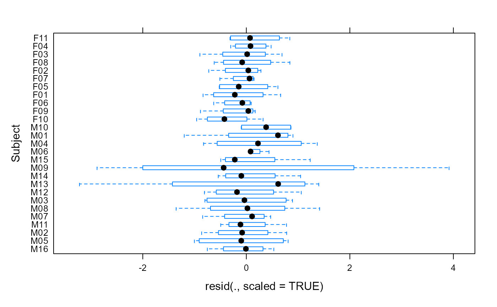
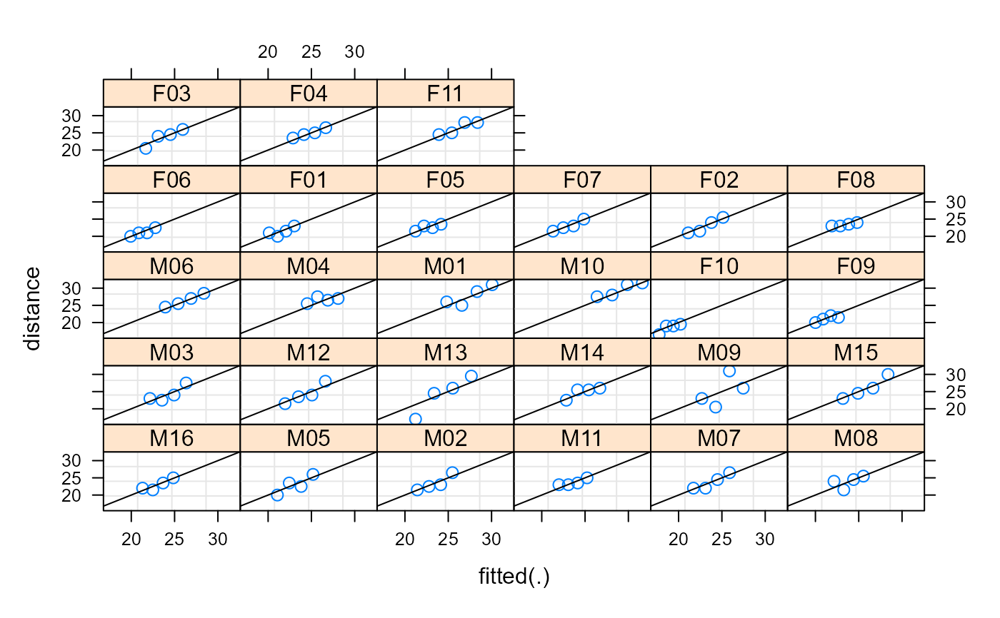
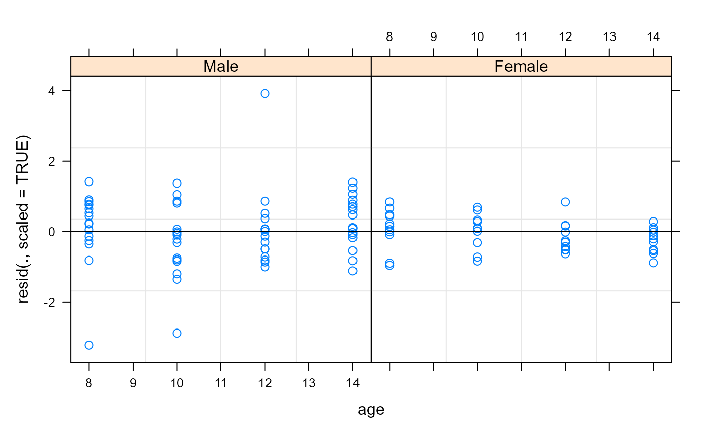
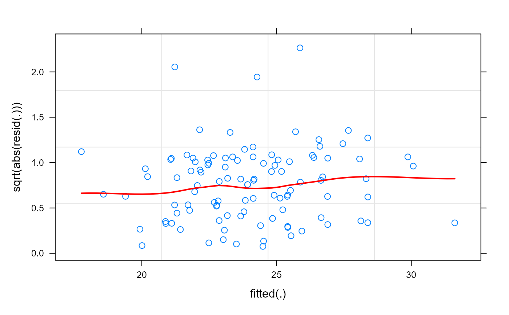
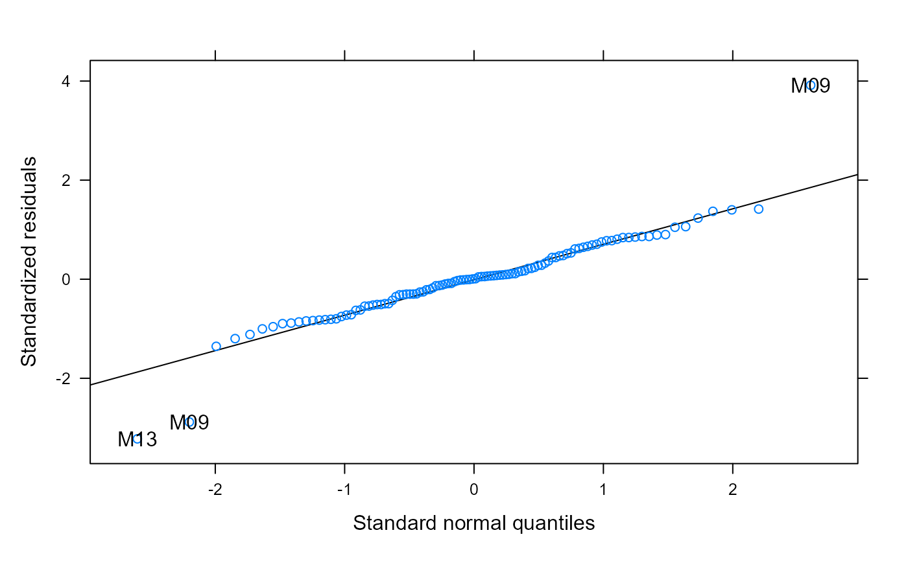

Diagnostic Plots for 'merMod' Fits
plot.merMod.Rddiagnostic plots for merMod fits
Arguments
- x
a fitted [ng]lmer model
- form
an optional formula specifying the desired type of plot. Any variable present in the original data frame used to obtain
xcan be referenced. In addition,xitself can be referenced in the formula using the symbol".". Conditional expressions on the right of a|operator can be used to define separate panels in a lattice display. Default isresid(., type = "pearson") ~ fitted(.), corresponding to a plot of the standardized residuals versus fitted values.- abline
an optional numeric value, or numeric vector of length two. If given as a single value, a horizontal line will be added to the plot at that coordinate; else, if given as a vector, its values are used as the intercept and slope for a line added to the plot. If missing, no lines are added to the plot.
- id
an optional numeric value, or one-sided formula. If given as a value, it is used as a significance level for a two-sided outlier test for the standardized, or normalized residuals. Observations with absolute standardized (normalized) residuals greater than the \(1-value/2\) quantile of the standard normal distribution are identified in the plot using
idLabels. If given as a one-sided formula, its right hand side must evaluate to a logical, integer, or character vector which is used to identify observations in the plot. If missing, no observations are identified.- idLabels
an optional vector, or one-sided formula. If given as a vector, it is converted to character and used to label the observations identified according to
id. If given as a vector, it is converted to character and used to label the observations identified according toid. If given as a one-sided formula, its right hand side must evaluate to a vector which is converted to character and used to label the identified observations. Default is the interaction of all the grouping variables in the data frame. The special formulaidLabels=~.obswill label the observations according to observation number.- data
ignored: required for S3 method compatibility
- grid
an optional logical value indicating whether a grid should be added to plot. Default depends on the type of lattice plot used: if
xyplotdefaults toTRUE, else defaults toFALSE.- ...
optional arguments passed to the lattice plot function.
Details
Diagnostic plots for the linear mixed-effects fit are
obtained. The form argument gives considerable
flexibility in the type of plot specification. A
conditioning expression (on the right side of a |
operator) always implies that different panels are used
for each level of the conditioning factor, according to a
lattice display. If form is a one-sided formula,
histograms of the variable on the right hand side of the
formula, before a | operator, are displayed (the
lattice function histogram is used). If
form is two-sided and both its left and right hand
side variables are numeric, scatter plots are displayed
(the lattice function xyplot is used). Finally, if
form is two-sided and its left had side variable
is a factor, box-plots of the right hand side variable by
the levels of the left hand side variable are displayed
(the lattice function bwplot is used).
qqmath produces a Q-Q plot of the residuals
(see qqmath.ranef.mer for Q-Q plots of the
conditional mode values).
Author
original version in nlme package by Jose Pinheiro and Douglas Bates.
Examples
data(Orthodont,package="nlme")
fm1 <- lmer(distance ~ age + (age|Subject), data=Orthodont)
## standardized residuals versus fitted values by gender
plot(fm1, resid(., scaled=TRUE) ~ fitted(.) | Sex, abline = 0)

## box-plots of residuals by Subject
plot(fm1, Subject ~ resid(., scaled=TRUE))

## observed versus fitted values by Subject
plot(fm1, distance ~ fitted(.) | Subject, abline = c(0,1))

## residuals by age, separated by Subject
plot(fm1, resid(., scaled=TRUE) ~ age | Sex, abline = 0)

## scale-location plot, with red smoothed line
scale_loc_plot <- function(m, line.col = "red", line.lty = 1,
line.lwd = 2) {
plot(fm1, sqrt(abs(resid(.))) ~ fitted(.),
type = c("p", "smooth"),
par.settings = list(plot.line =
list(alpha=1, col = line.col,
lty = line.lty, lwd = line.lwd)))
}
scale_loc_plot(fm1)

## Q-Q plot
lattice::qqmath(fm1, id=0.05)

ggp.there <- "package:ggplot2" %in% search()
if (ggp.there || require("ggplot2")) {
## we can create the same plots using ggplot2 and the fortify() function
fm1F <- fortify.merMod(fm1)
ggplot(fm1F, aes(.fitted, .resid)) + geom_point(colour="blue") +
facet_grid(. ~ Sex) + geom_hline(yintercept=0)
## note: Subjects are ordered by mean distance
ggplot(fm1F, aes(Subject,.resid)) + geom_boxplot() + coord_flip()
ggplot(fm1F, aes(.fitted,distance)) + geom_point(colour="blue") +
facet_wrap(~Subject) +geom_abline(intercept=0,slope=1)
ggplot(fm1F, aes(age,.resid)) + geom_point(colour="blue") + facet_grid(.~Sex) +
geom_hline(yintercept=0)+ geom_line(aes(group=Subject),alpha=0.4) +
geom_smooth(method="loess")
## (warnings about loess are due to having only 4 unique x values)
if(!ggp.there) detach("package:ggplot2")
}
#> Loading required package: ggplot2